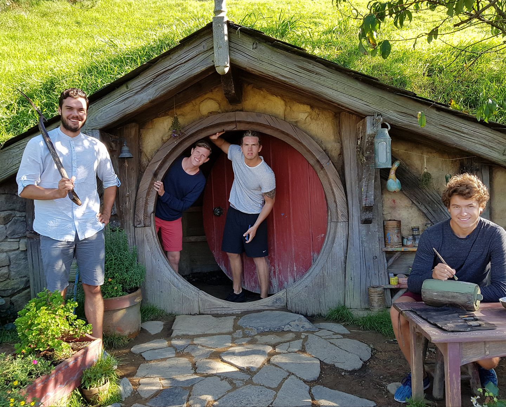
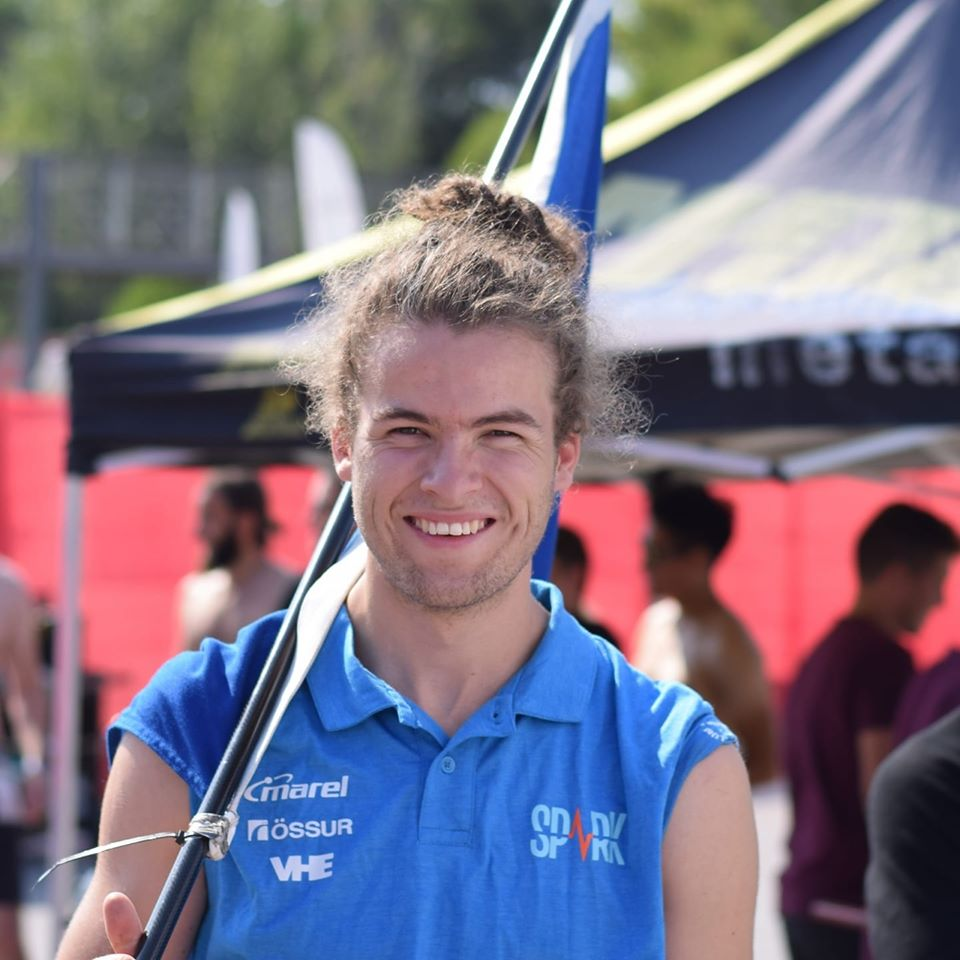

The Team
My team consist of myself, Aron and Alexander. Our proposal for a final project is a wine rack. See The Final Project page to read more about it. Here below is a text about my team members.

Aron Óttarsson
Aron Óttarsson is a very happy person who takes great pride in his work. He has many hobbies such as playing guitar and working on something manually, but he has also been practicing badminton for over 13 years and was part of the youth national team. However, his focus has been on his studies since he started studying mechanical engineering at the University of Iceland. He took on an exciting project through Team Spark, a development project within the University of Iceland where students design and construct an electric racing car from scratch. He started in the team airflow team that is designing the wings of the car, but after a few weeks, the board decided to put Aron in the team captain's position. It was a really demanding job, but instructive tasks involved planning the project, having an overview of the team and being a liaison with sponsors who help us with the production of the components of the system. After the team competition in Spain, I was asked to be on the next board and ended up with Aron taking over as project manager since the projects consisted mainly of organizing the team as a whole, all the projects within it, have an overview of the projects that were underway and organize the competition trips.
Alexander Róbert Magnússon
Alexander is a third-year student in Industrial Engineering at the University of Iceland, and he will graduate with a bachelor's degree this June. His areas of interest are differential equations, books of Ragnar's equivalent, normal distribution and analytic hyperbolic geometry. During his undergraduate studies, he has been an assistant teacher five times in the last two school years, twice in Linear Algebra, twice in Physical Science & Statistics and once in Physics. Through this course, he wants to gain a better experience and understanding of how the design of the product and its production takes place after an idea of a product has been found.